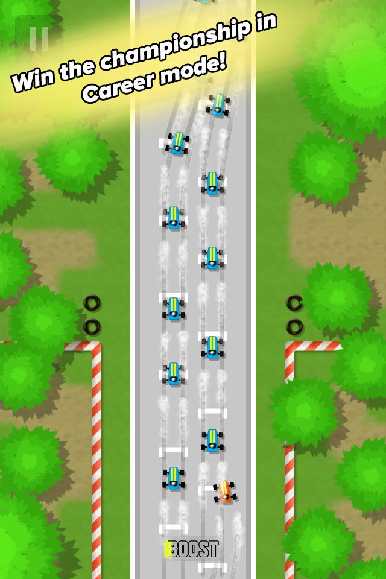
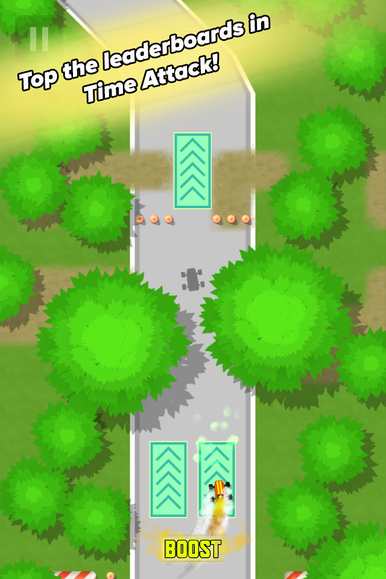
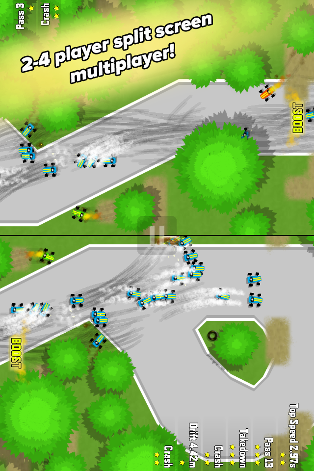
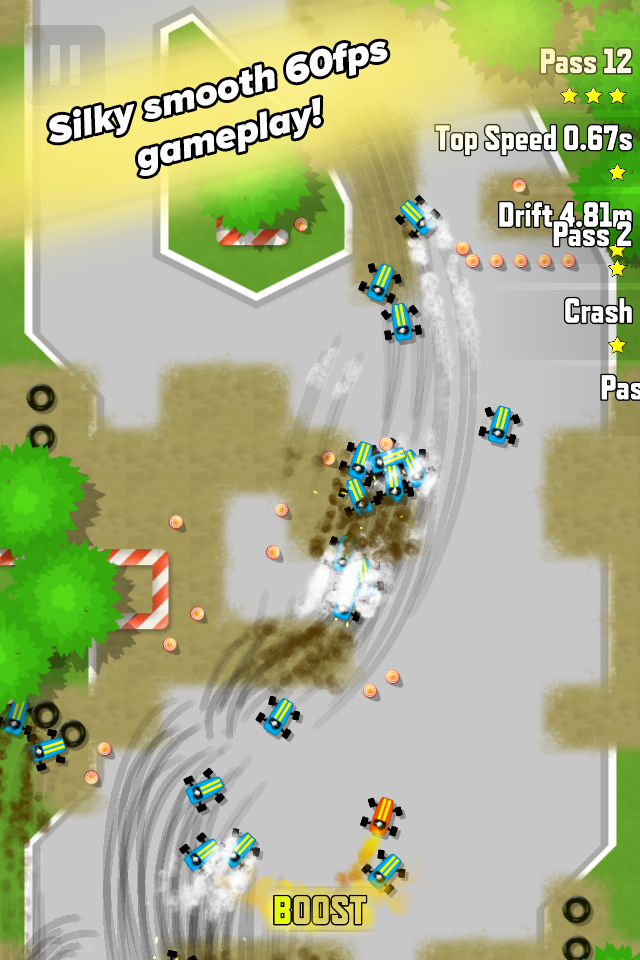

Follow your destiny to become the ultimate racing driver!
Drift'n'Drive is a vertically scrolling top-down racing game with lots of challenge and replayability.
Progress through the career mode racing challenges, get to the top of leaderboards in time attack mode or challenge your friends to a local split screen multiplayer tournament!
Release Date:
30.10.2014
Platforms:
iOS App Store (iOS8+, Universal)
Website:
Regular Price:
€1.79/ $1.99 / £1.49
Download trailer (60fps, 1080p)
   
Kimmo Lahtinen / @gimblll - Design / Code / Art
Kimmo is a veteran game developer whose credits include console games such as Resogun, Outland and Dead Nation as well as indie games such as Cosmic Mechanic and Puzzle Bonsai.
Tommi Lahtinen / @tommybaynen - Audio
Tommi is an electronic music producer whose tracks have been played worldwide by the likes of Above and Beyond, Armin van Buuren, Dash Berlin and Paul van Dyk.